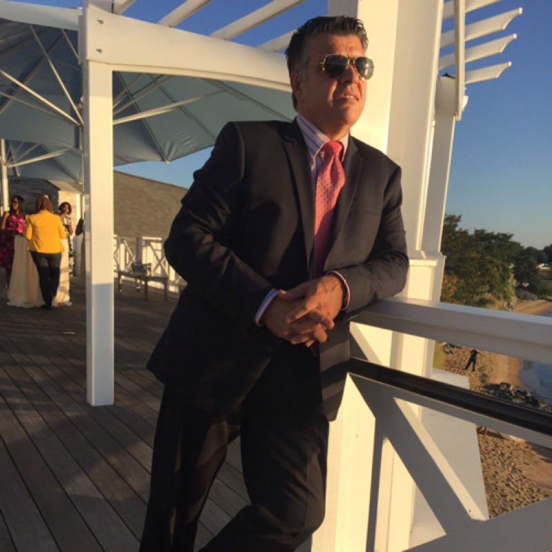

Elite Dental Lab
About Us
A full-service dental laboratory in Cockeysville, Maryland — built on three decades of craftsmanship.

Founder & Owner
Ivan Zaprianov
Ivan Zaprianov is a master dental technician with more than 30 years of experience in dental prosthetics. Educated in Dental Prosthetics in Bulgaria, he has refined his craft working across three countries — Bulgaria, Spain and the United States — bringing together European artistry and American digital innovation.
That international perspective shapes everything the lab produces: restorations built with old-world attention to detail and finished with the latest digital precision.
The Lab
Elite Dental Lab is a full-service lab located in Cockeysville, Maryland (Baltimore County). It specializes in a variety of products and services including, but not limited to: full-contour dental crowns and bridges, porcelain-fused-to-zirconia crowns and bridges, high-translucency anterior crowns, and implant restorations with custom abutments or screw-retained crowns — and much more.
The mission behind the lab is to simplify treatments and optimize results in restoring patients' healthy, natural-looking smiles.
For the past 25 years, Elite Dental Lab has been a customer-driven resource, committed to delivering superior quality products, innovative solutions, and unmatched service satisfaction. That's why Elite Dental Lab has become such a respected asset to many dental professionals throughout the region.
Elite Dental Lab takes pride in using all the latest technologies and only FDA-approved materials.
All procedures — scanning, design, milling, porcelain layering and more — are performed in-house, where a highly qualified and experienced team inspects every case to ensure full dentist and patient satisfaction.